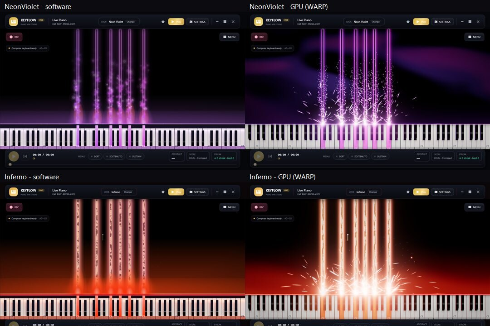

Gallery
Real Keyflow captures, with no stock artwork
The app screenshots here are rendered by Keyflow in CI with --snapshot in English and Tiếng Việt. Use the header switch to change those screenshots; the side-by-side preset comparison is a fixed English-language image.

The stage
What the GPU engine draws
Five looks of the same engine, changing by themselves. Use the arrow buttons, the bars below or the left and right arrow keys to choose one, or press pause to stay on a picture.

Live play: only the notes you play, the glowing hit line, sparks and the transport bar 
Neon Violet, the default look, with a chord being held 
Galaxy Voyage: rainbow trails over a cosmic layer 
Electric Storm: speed lines and arcs between the keys you hold 
Your own picture behind the keys, centre-cropped and dimmed 30/100


The interface
Three concert interfaces and the design dock
These screenshots are full of small print, so they wait for you: pick a page from the list or use the arrows. Press play if you would rather watch them go by.

The Concert Grand start menu, with the interface-language chips 
The Style page: presets, quick layer switches and the share code 
The Theme page: three interfaces, the theme studio and the quick looks 
The General page in Vietnamese: language, graphics engine and settings profile


The session
Choosing a score, practising, recording
Five steps in the order you meet them. They advance slowly on their own until you take over with the arrows or by choosing a step.

Practice: modes, tempo and the A-B loop 
History: every run of the open song, the chart and the ghost 
Recording: format, resolution, frame rate, audio and transparency 
The F1 card: every shortcut, in three groups


All presets
Fourteen looks, two engines, one picture
The CI pipeline renders every built-in preset twice — once with the software renderer and once with the GPU engine — and lays the results out in a single tall picture. It is the quickest way to compare looks, and the way the project proves the GPU stage kept each theme's intent.
- Neon Violet, Inferno, Aurora Rainbow, Ice Crystal, Two Hands, Classic Roll and Green Screen
- Sakura Nocturne, Concert Gold, Moonlight Sonata, Galaxy Voyage, Electric Storm, Ocean Depths and Retro Arcade
- Plus three community presets embedded in the build, labelled COMMUNITY in the list.

A preview of two preset comparisons; open the full image to see all fourteen
The whole sheet

In motion
One take, no editing
How these pictures are made
Keyflow can render its own interface: --snapshot draws a window off-screen and writes it out, --show-settings --settings-tab=… opens straight on a dock page, --play-chord holds a chord so the stage is not empty, and --lang=vi renders the whole interface in Vietnamese for that one run without touching your settings.
CI renders on WARP — Windows' own software rasterizer — so the pictures are reproducible on a runner with no graphics card, and they are re-rendered whenever the interface changes.
Your stage will look like this
Free and MIT licensed. Every app screenshot in this gallery shows the real interface — not stock artwork.